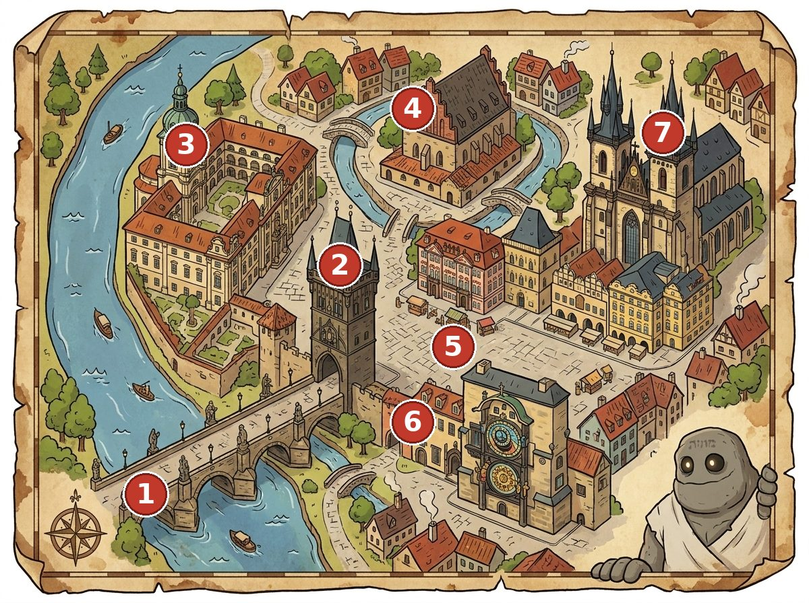

How it works
Each hunt follows a single walking route through one city — one direction, no doubling back. At every stop the children read a short fact, look at what is actually in front of them, and answer a question they can only solve by looking. A correct answer reveals a letter. Seven letters, seven stops, one magic word at the end.
The story is never generic. In Prague it is the Golem losing the word that keeps him alive; in Kraków, Gdańsk and Hallstatt it is the local legend of that place. Every number and date in the text is checked against a source, because children ask follow-up questions.

Cities
Each PDF includes all three languages — English, German and Hungarian.
What is in every hunt
7 stations on one continuous walking route, each with a fun fact, an illustration and a multiple-choice riddle.
A magic word assembled letter by letter from the correct answers.
A parent's answer sheet at the back, with a QR code to the route map.
Three languages in one purchase — English, German, Hungarian.
Fully offline. Print it at home before you travel.